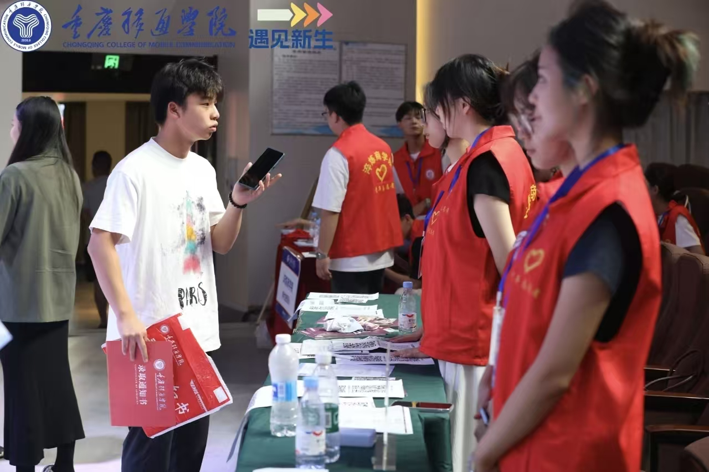

📋 开学报到
从收到录取通知书到完成报到，每一步都清楚明了
📨 1. 收到录取通知书后要做什么
- 仔细阅读所有材料：录取通知书、入学须知、缴费说明、助学贷款说明等
- 关注官方渠道：重庆移通学院官网（www.cqytu.com）和官方微信公众号
- 完成网上预报到（如学校要求）：按入学须知操作
- 准备报到材料：身份证、证件照、档案等（详见下方清单）
- 缴纳学费：通过学校官方渠道缴纳，不要向个人账户转账
- 办理助学贷款（如需）：按当地政策咨询办理
- 规划到校交通：确认校区（合川或綦江），预订车票/机票
📋 2. 报到材料参考（往年）
2025级参考信息
- ✅ 录取通知书（原件）
- ✅ 身份证（原件及复印件，2025级要求3张）
- ✅ 证件照（2025级要求一寸、二寸红底各8张）
- ✅ 个人档案（按通知要求自带或邮寄，勿拆封）
- ✅ 团员/党员档案（如有）
2026级材料要求以当年录取通知书和网上报到系统为准。
📎 查看2025级报到须知（往年参考）💰 3. 学费与住宿费
2026官方信息 重庆移通学院2026年招生章程已公布学费总体区间（15000～55000元/学年）和部分住宿费标准。各专业具体学费可在学校2026年本科招生专业表中查询。
待官方发布 个人宿舍分配、个人最终应缴金额、缴费入口、缴费截止日期及其他学杂费，以录取通知书及学校官方缴费渠道为准。
📎 查看2026招生专业介绍表 📎 查看2026招生章程🏦 4. 助学贷款与绿色通道
按当地政策，到户籍所在地县区教委、教育局所属学生资助中心或当地指定机构咨询办理生源地信用助学贷款。
往年官方参考 学校往年资助政策设有新生绿色通道。2026级申请条件、材料和办理流程，以当年学生资助通知为准。
📎 查看2026招生章程⚠️ 5. 新生群防骗
重要提醒：
- 新生群和通知渠道是否官方，应以学校官网、招生网、官方公众号、录取通知书、学院或辅导员正式通知为准
- 对无法核实身份、要求转账或索取身份证、学号、验证码等敏感信息的群聊和人员，应停止操作并通过学校官方渠道核实
- 代缴学费、预留宿舍、内部转专业、提前选课等未经学校官方确认的承诺属于高风险信息，不要付款或提交个人资料
详细防骗指南：新生防骗指南 →
🚗 6. 到校交通
📍 合川校区地址：重庆市合川区假日大道1号
（一）高铁/动车
从重庆北站或重庆西站出发，乘坐高铁或动车直达合川站，行程大约 25~36 分钟。到达合川站后：
- 打车：费用通常不超过 20 元
- 公交：乘坐 116路 或 126路 公交车到"移通学院"站，票价仅需 2 元
（二）长途汽车
重庆主城多个区的汽车客运站有直达合川客运中心的班车，全程高速，大约 60 分钟可到达。到达合川汽车站后：
- 打车：费用大约 10 元
- 公交：乘坐 236路 或其他合适的公交车到达学校附近
（三）自驾
导航"重庆市合川区假日大道1号"。路线：G75 渝武高速重庆至合川方向，在合川（涪江二桥）高速公路出口下道，至学校。
📍 綦江校区地址：重庆市綦江区通惠街道登瀛大道36号
（一）高铁/动车
从重庆北站或重庆西站出发，乘坐高铁或动车直达綦江东站，行程大约 25~33 分钟。到达綦江东站后：
- 打车：费用通常不超过 20 元
- 公交：乘坐 107路 公交车到"重庆移通学院"站，票价仅需 2 元
（二）长途汽车
重庆主城多个区的汽车客运站有直达綦江客运中心的班车，全程高速，大约 60~90 分钟可到达。到达綦江汽车站后：
- 打车：费用通常不超过 20 元
- 公交：乘坐 213路 或 202路 公交车到"重庆移通学院"站，票价仅需 2 元
（三）自驾
导航"重庆市綦江区登瀛大道36号"。路线：G75 兰海高速重庆至綦江方向，在綦江北、綦江、通惠、古剑山收费站出口下道至学校。
以上交通信息整理自学生实地经验，公交路线和票价可能调整，请以实际运营为准。
🏫 7. 报到当天流程
- 到达学校 → 找到学院报到点
- 核验录取通知书和身份证
- 具体安排待学校发布
详细流程：报到当天完整流程 →

2025级官方参考图片｜来源：重庆移通学院2025年普通本科新生入学指南。2026级接站及报到安排以学校当年正式通知为准。
👨👩👧 8. 家长送学注意事项
- 家长是否可以进入宿舍：具体安排待学校发布
- 学校周边住宿可能需要提前预订
- 建议家长了解学校官方通知渠道，避免被不实信息误导
⏰ 9. 提前到校问题
宿舍具体开放入住时间以2026级录取通知书和学校通知为准。如有特殊情况，请提前联系学校招生办或辅导员确认。
以上迎新图片为2025级官方参考图片｜来源：重庆移通学院2025年普通本科新生入学指南。2026级安排以学校当年通知为准。